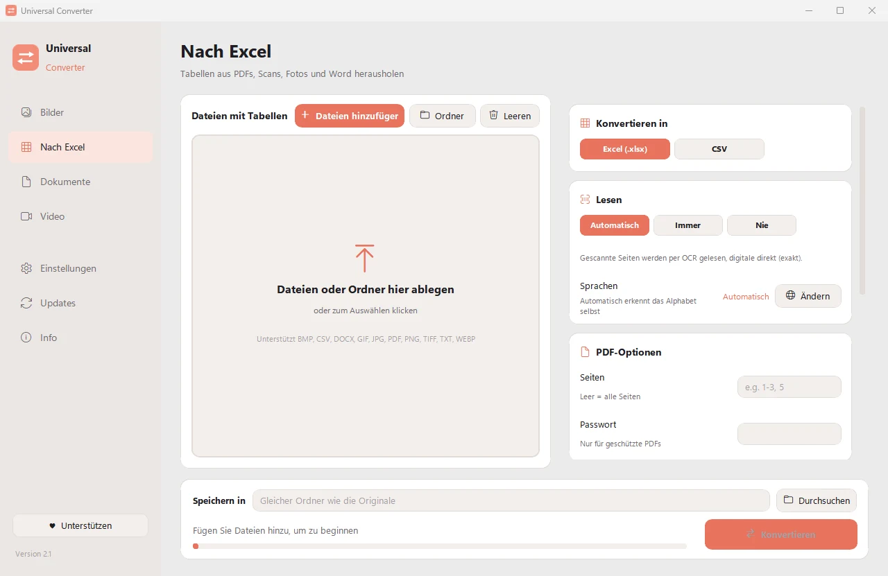
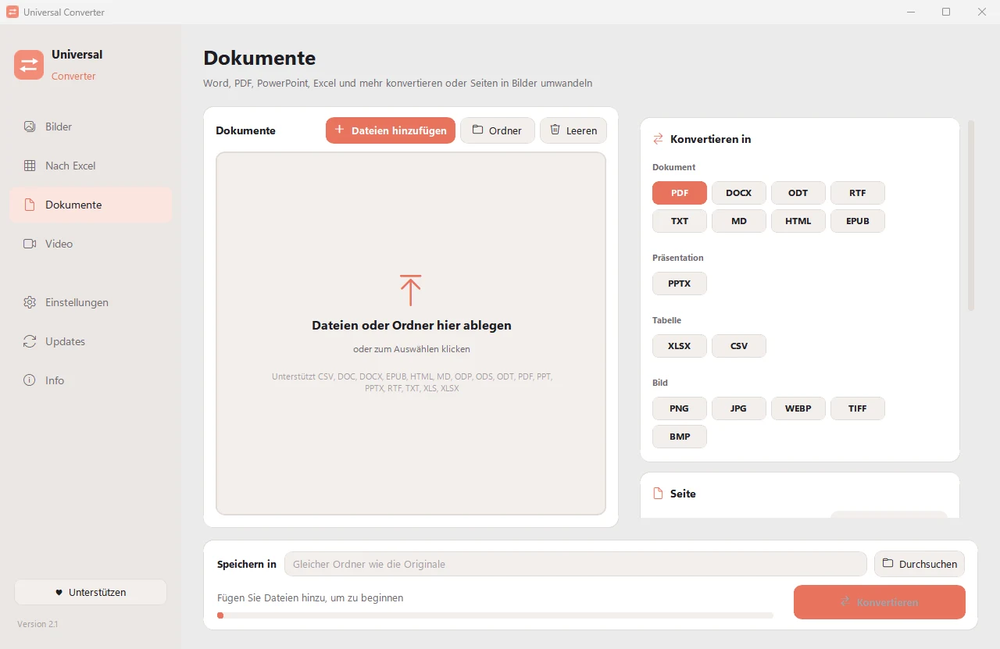

Dateien auf dem eigenen Computer umwandeln
Bilder, Dokumente, Video und Audio, PDFs und Tabellen nach Excel, alles in einer App. Nichts wird hochgeladen: Ihre Dateien verlassen nie Ihren Computer.

Privat
Alles läuft auf Ihrem Computer. Kein Hochladen, keine Warteschlange, keine Größenbeschränkung.
Kostenlos
Kostenlos nutzbar, ohne Werbung, ohne Konto und ohne Wasserzeichen.
10 Sprachen
Deutsch, Englisch, Griechisch, Spanisch, Italienisch, Französisch, Portugiesisch, Chinesisch, Japanisch und Koreanisch.
Vier Werkzeuge in einem Fenster
Bilder
Umwandeln zwischen JPG, PNG, WEBP, TIFF, BMP, GIF und ICO. Größe in Pixeln, Prozent oder Dateigröße ändern, Bilder zu einem PDF oder Word-Dokument zusammenfügen und Text in Bildern lesen (OCR).

Nach Excel
Tabellen aus PDFs, Scans und Fotos nach Excel oder CSV holen: Kontoauszüge, Rechnungen, Preislisten. Liest Deutsch, Englisch, Griechisch und über 30 weitere Sprachen.

Dokumente
Umwandeln zwischen PDF, Word, ODT, RTF, TXT, Markdown, HTML, EPUB, PowerPoint und Excel. Seiten in Bilder umwandeln und mehrere Dateien zu einem PDF zusammenfügen. Schriften, Größen und Farben bleiben erhalten.

Video
Videos nach MP4, MKV, WebM, MOV oder AVI mit AV1, H.265, H.264 oder VP9 umwandeln und komprimieren. Kürzen, zuschneiden, drehen und skalieren, GIFs erstellen, Einzelbilder speichern oder nur den Ton als MP3, M4A, FLAC, WAV, OGG oder Opus behalten.
- Nutzt für Videos wenn möglich die Grafikkarte: meist 5- bis 20-mal schneller.
- Ganze Ordner hineinziehen: alle Dateien werden in einem Durchgang umgewandelt.
- Aktualisiert sich selbst, mit digital geprüften Downloads.
- Helles und dunkles Aussehen, passend zu Ihrem Computer.
So funktioniert es
- Öffnen Sie Universal Converter und wählen Sie links Bilder · Nach Excel · Dokumente · Video.
- Ziehen Sie Ihre Dateien oder einen ganzen Ordner in das Fenster, oder klicken Sie auf Dateien hinzufügen.
- Klicken Sie auf Konvertieren. Die neuen Dateien werden neben den Originalen gespeichert oder im gewählten Ordner.
Was es kann
- Video komprimieren, ohne es hochzuladen
- MKV, MOV, AVI und WMV in MP4 umwandeln
- Den Ton eines Videos als MP3 speichern
- GIF aus einem Video erstellen
- Tabellen aus einem PDF nach Excel holen
- Fotos zu einem PDF zusammenfügen
- PDF in Word umwandeln
- Mehrere Dateien zu einem PDF zusammenfügen
- Text aus einem Bild kopieren (OCR)
- WEBP in JPG oder PNG umwandeln
- Bildgröße ändern oder auf eine Dateigröße verkleinern
Fragen
Ist es wirklich kostenlos?
Ja. Universal Converter ist kostenlos nutzbar, ohne Werbung, ohne Konto und ohne Zeitlimit. Wenn es Ihnen hilft, können Sie die Entwicklung mit einem freiwilligen Beitrag unterstützen, aber das müssen Sie nie.
Werden meine Dateien irgendwo hochgeladen?
Nein. Jede Umwandlung geschieht auf Ihrem eigenen Computer, daher funktioniert sie auch ohne Internetverbindung. Die App geht nur online, um nach Updates zu suchen.
Windows zeigt eine SmartScreen-Warnung. Ist das normal?
Ja. Das Installationsprogramm ist noch nicht codesigniert, daher kennt Windows es nicht. Wählen Sie „Weitere Informationen“ und dann „Trotzdem ausführen“. Spätere Updates prüft die App selbst digital.
Wie öffne ich es auf einem Mac?
Öffnen Sie die heruntergeladene Datei und ziehen Sie Universal Converter in „Programme“. Die App ist nicht von Apple signiert, daher blockiert macOS sie beim ersten Mal: Öffnen Sie Systemeinstellungen > Datenschutz & Sicherheit und klicken Sie auf „Dennoch öffnen“. Das ist nur einmal nötig.
Wie installiere ich es auf Android?
Laden Sie die APK auf das Handy, öffnen Sie sie und erlauben Sie die Installation, wenn Sie gefragt werden (Android 10 oder neuer). Englisch und Griechisch sind integriert; die anderen Sprachen laden Sie in den Einstellungen der App herunter. Die App meldet sich, wenn es eine neue Version gibt.
Welche Sprachen gibt es?
Die App gibt es auf Deutsch, Englisch, Griechisch, Spanisch, Italienisch, Französisch, Portugiesisch, Chinesisch, Japanisch und Koreanisch. Die Sprache wählen Sie bei der Installation oder später in den Einstellungen.
Universal Converter unterstützen
Universal Converter wird von einer Person entwickelt und bleibt kostenlos. Wenn es Ihnen Zeit spart, hilft ein freiwilliger Beitrag, es weiterzuführen. Zahlungen laufen über PayPal oder Revolut, die App sieht Ihre Zahlungsdaten nie.